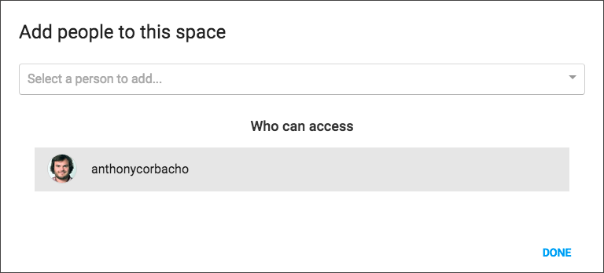

Sharing your notebooks
In order to share your notebooks with people, you will have to use spaces.
Spaces
You can see your spaces and spaces you are part of on the Side Menu.
A Space allows you to gather both Notebooks and Users. Making it a perfect place to share your new notebooks with your coworkers.
Creating a Space
You can create a new space by clicking on the + button in the Side Menu.

You then, only have to specify a name to see it being created.
Adding Notebooks to a Space
There are multiple ways to add a Notebook to a Space.

Drag and Drop
You can drag and drop a notebook into a space or instance.
Action Button
You can also click the notebook's share icon.
Inviting Users to your Space
You can manage the members of your space by clicking on the icon.
